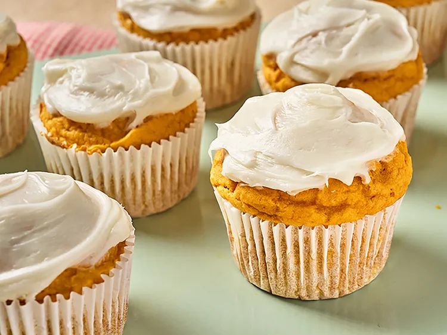

Pumpkin Cupcake Muffins

These sugar cookie pumpkin cupcake muffins take advantage of a super shortcut: refrigerated cookie dough plus 3 ingredients means almost no measuring. How easy is that!
Ingredients
- 1 (16.5 ounce) roll refrigerated sugar cookie dough
- 1 can pumpkin puree
- 3/4 cup self-rising flour
- 2 large eggs
- 1 teaspoon ground cinnamon (optional)
- 1 cup cream cheese frosting
Steps
- Preheat the oven to 350 degrees F (180 degrees C). Line a standard 12-well muffin tin with paper liners.
- Add cookie dough, pumpkin puree, flour, eggs, and cinnamon to a large mixing bowl. Blend until smooth with an electric mixer. Divide batter evenly among 12 lined muffin cups.
- Bake in the preheated oven until a toothpick inserted near the center comes out clean, about 20 minutes. Let cool completely., about 20 minutes.
- Top each cupcake with cream cheese frosting.
Home